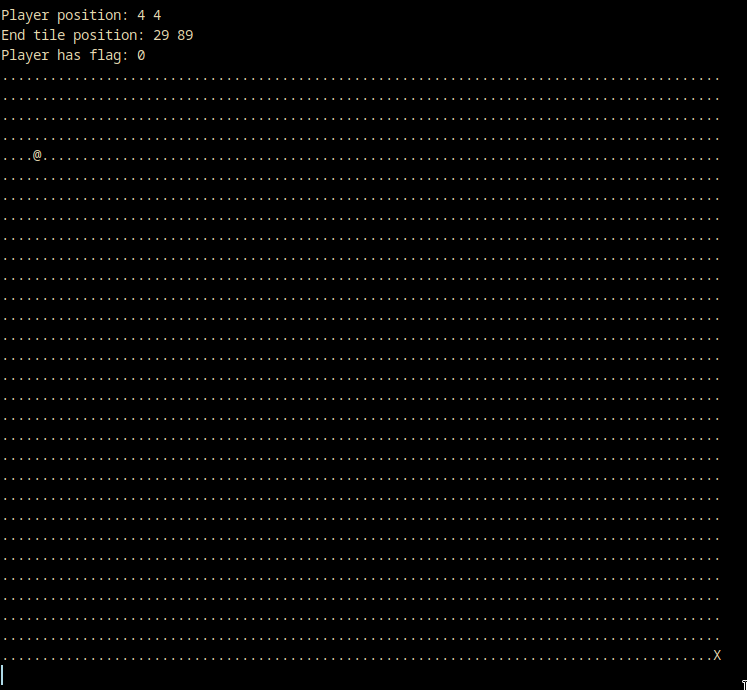

Baby's First Writeup
I've been playing picoGym to get better at CTFs and after finishing a few challenges, I've decided to do a writeup. This is my writeup of babygame01. I will assume the reader knows the basics of reversing. The challenge consists of a single executable which when run, displays a simple grid with a player and target.
Moving the player character with wasd to the target X finishes the game with a You Win message, but does not display the flag.
Opening the game executable in Ida, we see that the game first initializes the map, and then continuously prompts the player the move their character until they reach the bottom right of the game board, upon which the game exits.
However, there is an interesting if loop at the bottom, which triggers the win function if a certain variable is set. Inspecting the win function, we see that it loads the flag from a file and prints it.
Our objective will be to somehow set this flag_set variable in order to a nonzero value, then win the game to trigger the win function to get the flag. Unfortunately, flag_set does not seem to be manipulated in the main function, perhaps it is changed somewhere else?
Looking at the init_player function. We see that it takes player_pos, an array of 2 ints, as an argument. init_player sets player_pos[0] and player_pos[1] to 4, or the starting coordinates of the game. It also sets the byte immediately after player_pos to 0. If we inspect the stack of the program, we see that immediately following player_pos, flag_set appears in the stack. Therefore, init_player sets flag_set to 0! Furthermore, there is a massive array following the 3 variables that contains the game board. Knowing that the flag_set variable comes right after the player coordinates makes me suspect that some kind of buffer overflow might be involved...
Ok, lets check out the rest of the code, maybe there’s something else that might be of interest. We find it in the move_player function
In addition to the wasd commands to move the player around the board, there are two more commands: l and p. l sets the player character. This is not useful to us because player_tile is not stored where we want to overflow the buffer; getchar also only accepts one input character. The other command, p, automatically moves the player to the bottom right of the board, winning the game.
With this knowledge, we can attempt to overflow the stack. By moving to the top left corner and then going left four times, the number 64 shows up on the player has flag screen. From there, you can press p and autocomplete the game with the flag_set variable set, giving you the flag.
Conclusion
When I finished the challenge, I incorrectly believed that I was overflowing the stack from the player_pos[2] array. The majority of this writeup will reflect this line of thinking. However, some of the behavior the game exhibited did not align with this explanation. So I went back and played through the game multiple times using gdb to check the memory. For the sake of brevity, I will not go through all of my observations and experiments here. However, I found that the memory allocated to the flag set variable filled up with 2e and 40, which are the hex representations of the @ and . characters. I was actually overflowing from the game board!
Anyways, that concludes my writeup. I never imagined that I would find out that I solved a challenge wrong while doing a writeup. In order to keep this writeup short, and because I don't like to write, I omitted most of my challenge solving process, including false starts. I hope this writeup was helpful to you and if you have any questions, comments or concerns, you may send them to the email in the about page here